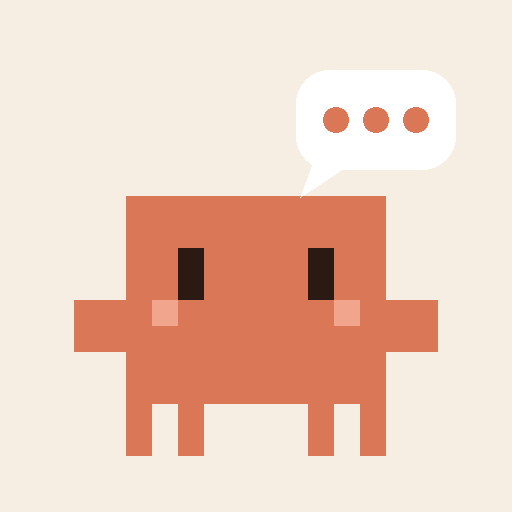

歡迎使用 imnotcc
選擇這台電腦的角色，完成快速設定
連到現有的 Server
輸入伺服器網址，之後隨時可以在「App 設定」裡更換。
把這台電腦設為 Server
需具備 Node.js 20 以上並登入過 Claude Code。
正在安裝本機 Server…
正在使用本機 Node.js 下載 Claude Agent SDK 等套件（約 400 MB），請稍候。
就緒
本機 Server 已經啟動
請記下登入密碼，之後也能在「App 設定」裡再次查看或更改。
本機位址：。若要從手機遠端連線，請將通道指到這個位址。